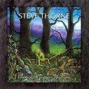

Home Artist links Label link

Steve Thorne - Emotional Creatures Part One
| Artist: | Steve Thorne |
| Title: | Emotional Creatures Part One |
| Label: | Giant Electric Pea GEPCD1035 |
| Length(s): | 52 minutes |
| Year(s) of release: | 2004 |
| Month of review: | [09/2005] |
Line up
Steve Thorne - vocals, backing vocals, acoustic guitar, keyboards, bass, electric guitars, pedals, percussion, programming, effects
Tony Levin - stick, bass
Paul Cook - drums, military snare
Geoff Downes - keyboards, hammond solo
Rob Aubrey - bass pedals, loops
Nick D'Virgilio - drums
Steve Christy - drums
Gary Chandler - guitar solo
John Jowitt - bass and fretless bass
Martin Orford - keyboards, flute, music box
Arnie Cotrell - mandolin
Liz Allen - backing vocals
Tracks
| 1) | Here They Come! | 1.45
|
| 2) | God Bless America | 3.10
|
| 3) | Well Outta That | 4.50
|
| 4) | Ten Years | 5.51
|
| 5) | Last Line | 4.23
|
| 6) | Julia | 5.33
|
| 7) | Therapy | 7.06
|
| 8) | Every Second Counts | 5.15
|
| 9) | Tumbleweeds | 3.38
|
| 10) | Gone | 6.01
|
| 11) | Goodbye | 5.24
|
Summary
I had never before heard of Steve Thorne, but a large part of the
English progressive rock scene plays along on this album, and a few
well-known proggy Americans as well. But is that a guarantee
for a good album?
The music
Here They Come! is a keyboards dominated intro together with march
drums played by Paul Cook. The follow-up, God Bless America, is
a typical singersongwriter tune. The vocals are plaintive, and not without
irony. The acoustic guitar is the dominant instrument. In fact, this
could well have been one of the more pop like tunes of modern IQ.
However, Thorne has much more of a singersongwriter voice. Orford
plays the flute here to add a mellowness to the song. Melodically this
is quite nice, maybe a bit too friendly. But I would not surprised if
that is going to change soon. Well Outta That is certainly less
friendly. The vocals are a bit gruff this time around, biting, a bit
similar in feel to Fish and maybe a bit of Roy Harper and Guy Manning.
The keyboards give the song a bit of an ethereal feel.
Ten Years certainly brings IQ to mind with Nicholls at his most subdued,
as for instance occurred quite a few times on the Subterranea album.
The vocal melody is excellent by the way. The song is very melancholic.
And you might notice a bit of Pineapple Thief as well.
Last Line is the first track where the music becomes a bit more powerful.
There is a strong drive to this song with some great organ playing
going over the top once or twice. The guitar harries the listener a bit more.
It is not surprising that we come to quieter waters with Julia. This is a
simple tune of acoustic guitar, but with an excellent vocal melody and
a welcome speed up at two thirds of the song. I am really getting to like
this album. Therapy is with just over seven minutes the longest song on this
album. With the clocking 'ticking' at the beginning, this song has
elements that invite the listener to singalong (and yes, maybe it is a
bit accessible, but again the melody is impeccable again), but sitting
in the train, I am not going to attempt that right now.
Every Second Counts opens forebodingly, followed by sequencing work, bass and
spoken words. The percussive feel that pervades this part makes it sound
quite modern. The drummer then starts hacking away and the guitar slowly
comes to fore with heavy chords resounding.
Tumbleweeds is a melodic, slightly jangly acoustic tune with some folky
leanings. The subsequent Gone has a strong rocking chorus, while the
verses are more relaxed. I am thinking of latter day Porcupine Tree here.
And Thorne again shows he has an excellent voice for this type of music.
And listen to that reversed guitar solo (which I guess is played by Chandler).
A great song, probably the high point of this album.
On Goodbye, Steve Thorne says goodbye to us, all by himself. As a result
this has become a mainly acoustic tune, in which he sings and strums.
Conclusion
The singersongwriter elements on this album are quite strong, but if there
is an album of this type that is going to appeal to the prog audience,
then it is likely this one (well T Naive would also do, I think). The sound
can be quite IQ/Jadis like and I hear echoes of Pineapple Thief, Roy Harper
and Guy Manning. If you like these, you ought to listen to this album. If you
have something against one of these names, you should still give this
the album a chance. In fact, even if you are not into prog, but into
some of the recent English pop bands, such as Keane, you might also
be pleasantly surprised. With the focus on the song material, it may not rock as hard and variedly as the average prog band, but on the
other hand there is no filler, no and meaningless noodling either. I for one am looking eagerly forward to part two.
© Jurriaan Hage